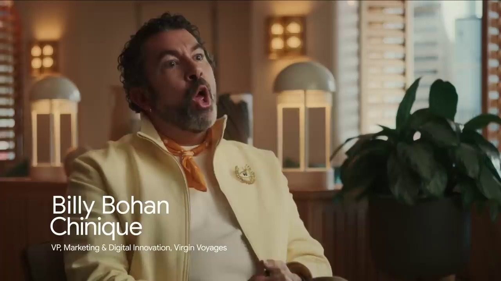
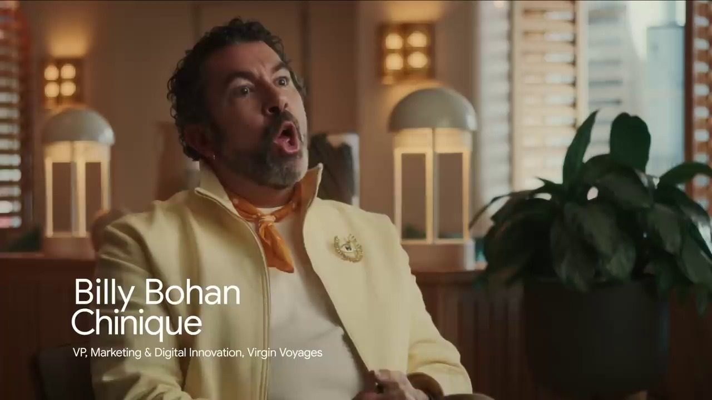
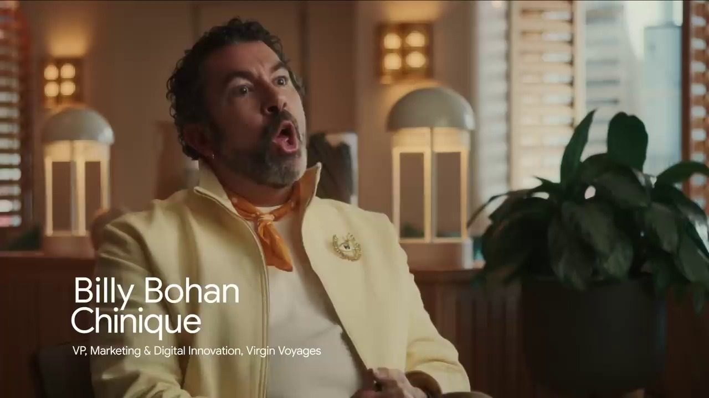
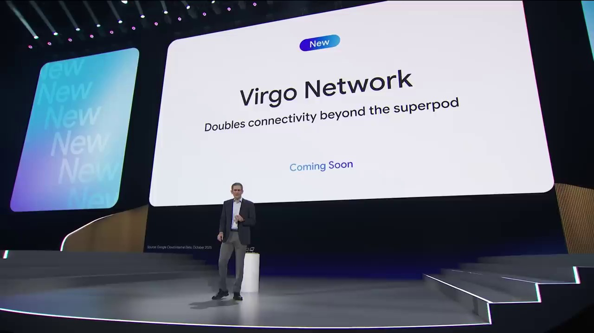
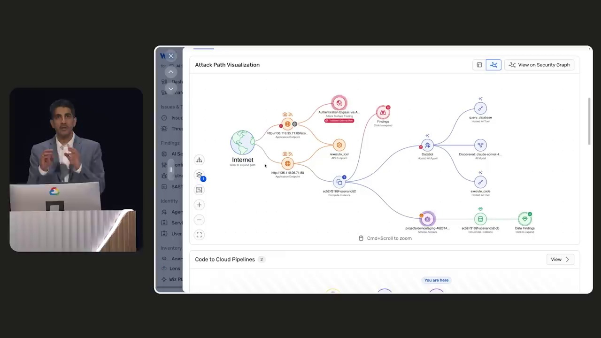
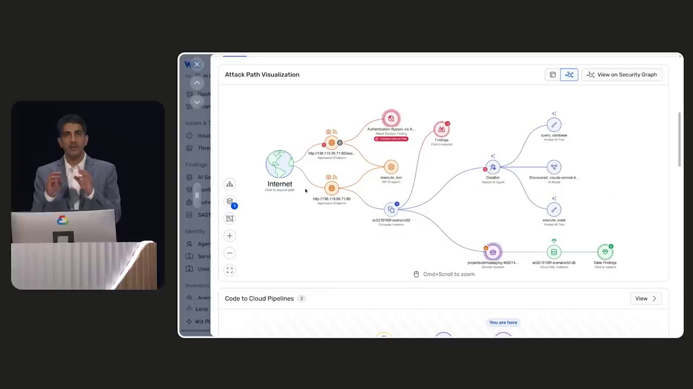

Key Moments









Summary & Script
Google Cloud Next '26 Opening Keynote
Source: https://www.youtube.com/watch?v=11PBno-cJ1g
Video ID: 11PBno-cJ1g
Overview
Google Cloud Next ’26 opened with Thomas Kurian and Sundar Pichai announcing that the AI‑first era has moved from pilot projects to enterprise‑wide production. Over 75 % of Google Cloud customers now use its AI tools, and Google is rolling out a unified “agentic” stack—Gemini Enterprise—that ties together custom chips, data, models, agents, and security. The keynote detailed the new platform, its underlying infrastructure, and early customer successes ranging from code generation to spaceflight.
New Features & Announcements
Gemini Enterprise Agent Platform – End‑to‑end system for building, scaling, governing and optimizing AI agents across an organization.
Timeline: announced today, preview available now
Availability: Public previewAI Hypercomputer – Purpose‑built hardware optimized for the “physics of the agentic era.”
Timeline: announced todayAgentic Data Cloud – Engine that feeds agents trusted, business‑contextual data.
Agentic Defense – Autonomous security layer that protects the entire AI lifecycle (zero‑trust verification, Model Armor, sandboxing).
Agentic Platform – Low‑code Agent Studio, Agent Registry, Skills & Tools Registry, Agent Marketplace, and Agent Gateway for unified development, deployment and policy enforcement.
Agentic Task Force – Pre‑built specialized agents (e.g., for finance, building management, retail, aerospace) ready to be consumed.
Model releases (preview)
- Gemini 3.1 Pro – reasoning model for complex workflow orchestration.
- Gemini 3.1 Flash Image (Nano Banana 2) – high‑fidelity visual generation.
- Veo 3.1 Lite – cost‑effective video generation.
- Lyria 3 Pro – enterprise‑grade audio/music.
- Added support for Anthropic Claude Opus 4.7.
Partnerships
- Apple – preferred cloud provider for next‑gen Apple foundation models (future “personalized Siri”).
- Citi Wealth – launch of “Citi Sky” AI‑powered wealth assistant.
- Honeywell, Liverpool FC, NASA (Artemis II flight‑readiness) – early adopter case studies.
Topics Covered
- Scale of AI Adoption – 75 % of Google Cloud customers now run AI in production; the shift from experimentation to enterprise‑wide deployment.
- Unified Stack Philosophy – Hardware, models, data, agents, and security must be tightly integrated; Google’s internal “OpenStack” is the example.
- Internal Google Use Cases – Code generation (75 % AI‑written), autonomous agents for code migration (6× faster), marketing asset creation (20 % lift in conversion), security SOC triage (90 % reduction in mitigation time).
- Agentic Era Vision – Moving from “can we build an agent?” to “how do we manage thousands of agents?”; Gemini Enterprise as the “mission control” for this transition.
- Platform Architecture Layers – Hypercomputer, Data Cloud, Defense, Platform, Task Force—each explained with security, observability, and orchestration capabilities.
- Developer Experience – Low‑code Agent Studio, natural‑language agent creation, reusable Skills/Tools, marketplace for third‑party agents, Model Context Protocol (MCP) integration.
- Governance & Security – Agent Identity with cryptographic IDs, zero‑trust policies, centralized Agent Gateway, Model Armor to prevent data leakage.
- Observability – OpenTelemetry‑compatible telemetry, trace visualisation, fine‑grained logging for debugging reasoning loops.
- Customer Showcases – Citi Sky (financial advice), Honeywell digital twins for building management, Liverpool’s AI shopping assistant, NASA’s Artemis II flight‑readiness agents.
Key Takeaways
- The AI market has moved from pilots to production at unprecedented scale; enterprise AI is now a baseline expectation.
- Google’s answer is a fully integrated, secure, and observable agentic stack—Gemini Enterprise—that connects chips, models, data, and workflow automation.
- New hardware (AI Hypercomputer) and a suite of specialized foundation models are entering preview, targeting complex orchestration, visual, video, and audio workloads.
- Security is baked in via zero‑trust verification, Model Armor, and cryptographic agent identities.
- Low‑code tools, registries, and a global marketplace make it possible for any employee to build and deploy agents safely.
- Major partners (Apple, Citi, Honeywell, NASA, etc.) are already leveraging Gemini Enterprise to create mission‑critical AI assistants.
- Google’s massive CapEx increase (up to $185 B) underscores its commitment to staying at the AI frontier and delivering cutting‑edge resources to customers.
Notable Quotes
- “We stood on this stage a year ago and promised a new future for AI. Today, that future is running in production at a scale the world has never seen.” – Thomas Kurian
- “The experimenting phase is behind us. The real challenge begins: How do you move AI into production across your entire enterprise?” – Thomas Kurian
- “We are firmly in the agentic Gemini era… every employee in every organization can become a builder.” – Sundar Pichai
- “Intelligence plus automation must deliver value. To make this work, you need context and action.” – Thomas Kurian
- “Our Security Operations Center agents automatically triage tens of thousands of unstructured threat reports each month, reducing mitigation time by over 90 %.” – Sundar Pichai
- “Think of Gemini Enterprise as mission control for the agentic enterprise.” – Sundar Pichai
Podcast Script
JORDAN: Welcome to SlackCasts by PodSlacker — where AI does the watching so you can do the listening. If you want a richer experience with today's episode, visit PodSlacker dot com slash SlackCasts — you'll find a written summary, key frame moments from the video, and an interactive AI chat to explore the topic as deep as you like. Now let's get into it.
MIKE: The stage was set at Google Cloud Next ’26, and Thomas Kurian opened with a bold claim: the AI‑first era has left the lab and is now running in production for three‑quarters of Google Cloud customers. That scale shift changes everything for us enterprise architects.
JORDAN: Exactly. The keynote framed the problem as moving from “can we build an agent?” to “how do we govern thousands of agents?” Their answer is Gemini Enterprise—a unified, agentic stack that ties custom silicon, data pipelines, foundation models, and security into a single control plane.
MIKE: Let’s unpack the stack layer by layer, starting at the bottom: the AI Hypercomputer. Google announced purpose‑built hardware optimized for what they call the “physics of the agentic era.” Do we have any specs?
JORDAN: While the exact TPU generation wasn’t disclosed, the Hypercomputer is positioned as a next‑gen Tensor‑accelerated fabric with ultra‑low latency interconnects, designed to keep model inference, tool execution, and orchestration in the same memory domain. That eliminates the “model‑to‑data” transfer bottleneck that plagues conventional clusters.
MIKE: That hardware foundation fuels the new foundation models. They previewed Gemini 3.1 Pro for reasoning, Gemini 3.1 Flash Image (Nano Banana 2) for high‑fidelity visuals, Veo 3.1 Lite for cost‑effective video, and Lyria 3 Pro for enterprise‑grade audio. Plus Anthropic’s Claude Opus 4.7. How do these fit into enterprise workloads?
JORDAN: Gemini 3.1 Pro is the workhorse for complex workflow orchestration—think multi‑step approval pipelines or dynamic API choreography. Flash Image handles design‑heavy use cases like rapid marketing asset generation, while Veo Lite lets you spin up millions of short video clips for personalized outreach without breaking the budget. Lyria 3 Pro brings high‑quality voice synthesis for IVR or AI‑powered assistants, which is what Citi Sky leverages for multilingual wealth advice.
MIKE: Speaking of Citi Sky, the partnership showcase is a concrete example of the “Agentic Task Force.” Those are pre‑built, domain‑specific agents, right?
JORDAN: Correct. The Task Force includes agents for finance, building management, retail, aerospace, and more. They ship with curated prompts, tool integrations, and compliance templates, letting enterprises drop them into production with minimal customization. The Citi Sky assistant, for instance, taps into internal market data, compliance rules, and GCP’s translation services—all through a single agent definition.
MIKE: Honeywell and Liverpool also got their own task‑force agents—digital twins for building management and an AI shopping assistant that reportedly drives a ten‑fold ROI. The breadth of these deployments underscores the platform’s versatility.
JORDAN: And at the top of the stack sits the Agentic Platform, which is essentially a low‑code development environment. Agent Studio lets any employee compose agents with natural language, binding LLM reasoning to business rules. Under the hood, it auto‑generates the orchestration graph, registers tools from the Skills & Tools Registry, and publishes the artifact to the Agent Registry.
MIKE: The registry part is key for governance. Every agent gets a cryptographic identity, and the Agent Gateway enforces zero‑trust policies across the entire lifecycle. How does that differ from traditional IAM?
JORDAN: Traditional IAM scopes permissions at the service or user level. Here, each agent has a unique public‑key‑derived ID, and policies are attached to that ID, allowing fine‑grained, auditable control over every tool invocation. Combined with Model Armor, you get data‑in‑motion encryption and sandboxing that prevents prompts from leaking proprietary information.
MIKE: That’s the Agentic Defense layer. Zero‑trust verification, Model Armor, secure sandboxes—basically a defense‑in‑depth approach for the AI supply chain. They also mentioned automated threat triage inside Google’s SOC, cutting mitigation time by 90 %. That seems like an internal proof point for the security model.
JORDAN: Right, the SOC agents ingest unstructured threat reports, extract indicators, and route them through a deterministic reasoning path. The same pattern can be replicated by any enterprise using the platform’s orchestrated agent‑to‑agent workflows, ensuring consistent, repeatable security actions.
MIKE: Observability is another pillar. They built OTel‑compatible telemetry into every agent execution, exposing traces, spans, and fine‑grained logs. That lets you visualize reasoning loops and detect “hallucination” or infinite recursion in real time.
JORDAN: The trace visualizer shows each LLM call, tool execution, and conditional branch as a node. You can drill down to the prompt level, see token usage, and even attach custom metrics. This is vital for compliance‑heavy industries where you need a full audit trail of AI decisions.
MIKE: Let’s circle back to the unified stack philosophy. Thomas said you can’t piece together fragmented silicon and disconnected models. By co‑designing the Hypercomputer, Data Cloud, and Defense layers, Google ensures that latency, security, and data residency constraints are addressed holistically.
JORDAN: The Agentic Data Cloud is the data engine that injects trusted, business‑contextual data into agents. It integrates with BigQuery, Cloud SQL, and even Google Workspace, applying lineage tagging so that agents can reason over “clean” data sets with built‑in provenance.
MIKE: That provenance feeds directly into governance—agents can be restricted to only query data that matches certain compliance tags, and the platform can enforce that at runtime via the Agent Gateway. It’s a concrete implementation of “intelligence plus automation must deliver value.”
JORDAN: On the developer experience side, the low‑code Agent Studio also supports Model Context Protocol (MCP). That means any external model or service exposing an MCP endpoint can be invoked as a first‑class tool, expanding the ecosystem beyond GCP.
MIKE: Which brings us to the marketplace. The Agent Marketplace aggregates third‑party agents from Atlassian, Box, Oracle, ServiceNow, Workday, and others. Enterprises can browse, trial, and provision agents with a single click, accelerating time‑to‑value.
MIKE: The keynote also highlighted internal use cases—75 % of Google’s own code now generated by AI, autonomous code‑migration agents that are six times faster, marketing asset generation cutting turnaround by 70 % and boosting conversion 20 %, and SOC agents cutting mitigation time by 90 %. Those are not just bragging rights; they’re proof that the stack works at massive scale.
JORDAN: Absolutely. It demonstrates that the same abstractions they’re offering to customers have already been battle‑tested at Google’s scale. The “agentic era” isn’t speculative; it’s operational.
MIKE: Let’s not forget the massive CapEx ramp—up to $185 B this year, with half of the ML compute earmarked for the cloud. That budget underwrites the Hypercomputer rollout, the data‑centrism of the Agentic Data Cloud, and the security investments in Model Armor. For us, it means the platform will keep evolving rapidly.
JORDAN: And the partnership ecosystem reinforces that. Apple is using Gemini Enterprise as the preferred cloud for next‑gen Siri‑style foundation models. NASA is running agents for Artemis II flight‑readiness, showing the stack can meet aerospace reliability standards. Those use cases push the envelope on latency, compliance, and fault tolerance.
MIKE: So, to synthesize: Gemini Enterprise is a mission‑control‑style platform that unifies hardware, models, data, agents, and security. It provides low‑code creation, a governance layer with cryptographic identities, zero‑trust defense, and observability baked in. That’s the new baseline for enterprise AI.
JORDAN: The takeaway for practitioners is clear: if you’re still stitching together separate LLM APIs, storage buckets, and custom auth layers, you’re building the pre‑agentic era. Adopting Gemini Enterprise—or a comparable end‑to‑end stack—will be essential to scale agents safely and responsibly.
MIKE: And from a strategic viewpoint, the platform’s marketplace and task‑force agents give you immediate ROI while you build bespoke agents for core business logic. The combination of pre‑built and custom agents accelerates adoption across the organization.
JORDAN: Finally, keep an eye on the preview releases—Gemini 3.1 Pro, Flash Image, Veo Lite, Lyria 3 Pro, and Claude Opus 4.7. Early experimentation will let you benchmark performance and cost before the full GA roll‑out.
MIKE: That wraps up our deep dive into Google’s Gemini Enterprise Agent Platform. We’ve dissected the hardware, models, data engine, security, developer tools, and real‑world deployments. For anyone looking to modernize their AI infra, this is the playbook to watch.
JORDAN: That's a wrap on today's SlackCast. Head over to PodSlacker dot com slash SlackCasts for the written summary, visual key moments, and an AI chat to dive even deeper into today's topic. Until next time — slack off smarter.